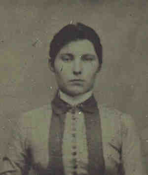

|
|
 Mary Agnes DONOHOE (1865-1943) |
Mary Agnes DONOHOE
• She emigrated about 1883 from Ireland. 2 4 6 8 Mary emigrated to the United States because she did not get along with her step-mother in Ireland. She came to the States by herself. • She appeared in the 1900 census on 16 Jun 1900 in Pittsburgh, Allegheny, PA. 2 Mary was listed as having 5 children of whom 3 were living. • She appeared in the 1920 census on 8 Jan 1920 in Pittsburgh, Allegheny, PA. 9 • She appeared in the 1930 census on 10 Apr 1930 in Pittsburgh, Allegheny, PA. 10 • She appeared in the 1940 census on 15 Apr 1940 in Bethel Township, Allegheny, PA. 11 Mary married Michael James DONAHUE, son of James DONAHUE and Bridget A. CONROY, on 30 Aug 1888 in Allegheny County, PA.1 2 (Michael James DONAHUE was born on 18 May 1857 in Ireland 3, died on 5 Jan 1940 in Pittsburgh, Allegheny, PA 12 and was buried on 9 Jan 1940 in Calvary Cemetery, Pittsburgh, PA 7 12.) |
1 Church of Jesus Christ of Latter Day Saints, FamilySearch® International Genealogical Index, (Salt Lake City, Utah, Intellectual Reserve, 2001, http://www.familysearch.org).
2 Pennsylvania, Allegheny County, 1900 U.S. Census, Population Schedule, (Washington, D.C., National Archives and Records Administration), ED 173, Sheet 12, Line 79.
3 Pennsylvania, Various County Courthouses, Pennsylvania County Marriages, 1885-1950, (Pennsylvania (via FamilySearch)).
4 Commonwealth of Pennsylvania, Department of Health, Bureau of Vital Statistics, Death Certificate - Mary Donohoe, (21 Oct 1943).
5 Thomas Hoey, Oral Interview of Jimmy Walsh, (Pittsburgh, PA, 2 Aug 1999).
6 Rosemary Weet Hoey, Oral Interview of Judy Donahue Windsheimer, (Pittsburgh, PA, 22 May 2002).
7 Calvary Cemetery, Cemetery Records, (Pittsburgh, PA, 7 Sep 1999).
8 Thomas Hoey, Oral Interview of Mary Elizabeth Hoey Walsh, (Pittsburgh, PA).
9 Pennsylvania, Allegheny County, 1920 U.S. Census, Population Schedule, (Washington, D.C., National Archives and Records Administration), ED 326, Sheet 5, Line 60.
10 Pennsylvania, Allegheny County, 1930 U.S. Census, Population Schedule, (Washington, D.C., National Archives and Records Administration), ED 2-59, Sheet 8, Line 1.
11 Pennsylvania, Allegheny County, 1940 U.S. Census, Population Schedule, (Washington, D.C., National Archives and Records Administration), ED 2-33, Sheet 9, Line 45.
12 Commonwealth of Pennsylvania, Department of Health, Bureau of Vital Statistics, Death Certificate - Michael Donahue, (5 Jan 1940).
{kind=link}